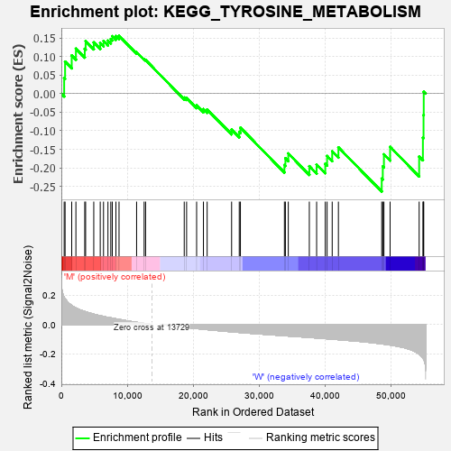
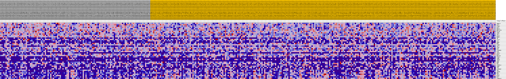
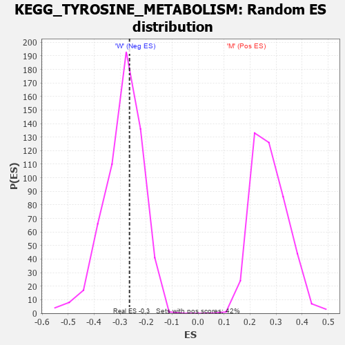

| Dataset | MUC16.MUC16.cls#M_versus_W.MUC16.cls#M_versus_W_repos |
| Phenotype | MUC16.cls#M_versus_W_repos |
| Upregulated in class | W |
| GeneSet | KEGG_TYROSINE_METABOLISM |
| Enrichment Score (ES) | -0.26391643 |
| Normalized Enrichment Score (NES) | -0.9184676 |
| Nominal p-value | 0.5833333 |
| FDR q-value | 1.0 |
| FWER p-Value | 0.999 |

| PROBE | DESCRIPTION (from dataset) | GENE SYMBOL | GENE_TITLE | RANK IN GENE LIST | RANK METRIC SCORE | RUNNING ES | CORE ENRICHMENT | |
|---|---|---|---|---|---|---|---|---|
| 1 | TRMT11 | na | 429 | 0.184 | 0.0418 | No | ||
| 2 | GOT2 | na | 570 | 0.175 | 0.0862 | No | ||
| 3 | LCMT1 | na | 1574 | 0.129 | 0.1028 | No | ||
| 4 | GOT1 | na | 2211 | 0.111 | 0.1212 | No | ||
| 5 | BUD23 | na | 3551 | 0.088 | 0.1206 | No | ||
| 6 | METTL2B | na | 3685 | 0.086 | 0.1414 | No | ||
| 7 | NAA80 | na | 4920 | 0.070 | 0.1379 | No | ||
| 8 | ADH5 | na | 5902 | 0.060 | 0.1362 | No | ||
| 9 | AOC2 | na | 6400 | 0.055 | 0.1419 | No | ||
| 10 | GSTZ1 | na | 7073 | 0.048 | 0.1427 | No | ||
| 11 | HEMK1 | na | 7503 | 0.045 | 0.1470 | No | ||
| 12 | TH | na | 7730 | 0.043 | 0.1546 | No | ||
| 13 | IL4I1 | na | 8283 | 0.039 | 0.1550 | No | ||
| 14 | TAT | na | 8755 | 0.035 | 0.1558 | No | ||
| 15 | PNMT | na | 11420 | 0.015 | 0.1116 | No | ||
| 16 | HGD | na | 12563 | 0.007 | 0.0929 | No | ||
| 17 | LCMT2 | na | 12785 | 0.006 | 0.0904 | No | ||
| 18 | AOX1 | na | 18647 | -0.019 | -0.0106 | No | ||
| 19 | COMT | na | 19007 | -0.021 | -0.0116 | No | ||
| 20 | MIF | na | 20527 | -0.028 | -0.0317 | No | ||
| 21 | ALDH3B1 | na | 21560 | -0.032 | -0.0418 | No | ||
| 22 | FAH | na | 22125 | -0.035 | -0.0427 | No | ||
| 23 | ADH1A | na | 25836 | -0.049 | -0.0967 | No | ||
| 24 | MAOA | na | 26995 | -0.054 | -0.1032 | No | ||
| 25 | METTL6 | na | 27172 | -0.054 | -0.0918 | No | ||
| 26 | TYRP1 | na | 33847 | -0.076 | -0.1922 | No | ||
| 27 | ADH4 | na | 33999 | -0.077 | -0.1743 | No | ||
| 28 | ADH1C | na | 34437 | -0.078 | -0.1613 | No | ||
| 29 | ADH7 | na | 37629 | -0.088 | -0.1955 | No | ||
| 30 | DBH | na | 38737 | -0.091 | -0.1910 | No | ||
| 31 | DDC | na | 40044 | -0.096 | -0.1890 | No | ||
| 32 | ALDH3A1 | na | 40324 | -0.097 | -0.1681 | No | ||
| 33 | ADH6 | na | 41098 | -0.099 | -0.1554 | No | ||
| 34 | TYR | na | 42042 | -0.103 | -0.1449 | No | ||
| 35 | ALDH3B2 | na | 48614 | -0.131 | -0.2288 | Yes | ||
| 36 | TPO | na | 48774 | -0.132 | -0.1963 | Yes | ||
| 37 | ADH1B | na | 48947 | -0.133 | -0.1637 | Yes | ||
| 38 | HPD | na | 49883 | -0.139 | -0.1434 | Yes | ||
| 39 | AOC3 | na | 54293 | -0.200 | -0.1695 | Yes | ||
| 40 | MAOB | na | 54862 | -0.227 | -0.1187 | Yes | ||
| 41 | DCT | na | 54959 | -0.233 | -0.0578 | Yes | ||
| 42 | ALDH1A3 | na | 54987 | -0.236 | 0.0051 | Yes |

